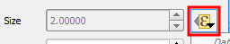

In the Style tab of the Layer Properties dialog, click the data-override button next to Size and, under expression, choose Edit...

In the Expression Builder, you may recognize some of the input values that we set before inside the scale_exp() function. You can even change them directly in the function.
As an example, change the minimum value from 0 to 500, by changing the expression to:
coalesce(scale_exp("capacityto", 500, 2500, 2, 10, 0.57), 0)
Click OK
Click OK again to apply the changes and close the Layer Properties dialog.
Click Next step.